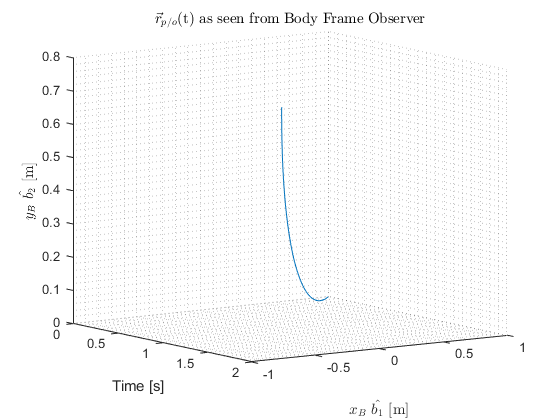

Contents
MAE 562 HW5 Gabriel Colangelo 50223306
clear
close all
clc
Problem 8.10.B
t = (0:0.01:2)';
x = -t + 1;
y = zeros(length(t),1);
figure()
ax1 = subplot(3,1,1);
plot(t,x)
ylabel('x $\hat{e_1}$ [m]','Interpreter','latex')
xlabel('Time [s]')
title('x component of $\vec{r}_{p/o}$(t)','Interpreter','latex')
grid minor
ax2 = subplot(3,1,2);
plot(t,y)
ylabel('y $\hat{e_2}$ [m]','Interpreter','latex')
xlabel('Time [s]')
title('y component of $\vec{r}_{p/o}$(t)','Interpreter','latex')
grid minor
ax3 = subplot(3,1,3);
plot(x,y)
ylabel('y $\hat{e_2}$ [m]','Interpreter','latex')
xlabel('x $\hat{e_1}$ [m]','Interpreter','latex')
title('$\vec{r}_{p/o}$(t) = x $\hat{e_1}$ + y $\hat{e_2}$','Interpreter','latex')
grid minor
linkaxes([ax1 ax2 ax3],'x')
figure()
plot3(t,x,y)
grid minor
xlabel('Time [s]')
ylabel('x $\hat{e_1}$ [m]','Interpreter','latex')
zlabel('y $\hat{e_2}$ [m]','Interpreter','latex')
title('$\vec{r}_{p/o}$(t) as seen from Inertial Observer','Interpreter','latex')
view(55,10);
Problem 8.10.D
Omega = 0.2 ;
IC1 = [1 0 -1 0]' ;
options = odeset('AbsTol',1e-8,'RelTol',1e-8) ;
[T,Z1] = ode45(@(t,z) BodyParticle(t,z,Omega),t,IC1,options) ;
figure()
ax1 = subplot(3,1,1);
plot(t,Z1(:,1))
ylabel('$x_B$ $\hat{b_1}$ [m]','Interpreter','latex')
xlabel('Time [s]')
title('$x_B$ component of $\vec{r}_{p/o}$(t)','Interpreter','latex')
grid minor
ax2 = subplot(3,1,2);
plot(t,Z1(:,2))
ylabel('$y_B$ $\hat{b_2}$ [m]','Interpreter','latex')
xlabel('Time [s]')
title('$y_B$ component of $\vec{r}_{p/o}$(t)','Interpreter','latex')
grid minor
ax3 = subplot(3,1,3);
plot(Z1(:,1),Z1(:,2))
ylabel('$y_B$ $\hat{b_2}$ [m]','Interpreter','latex')
xlabel('$x_B$ $\hat{b_1}$ [m]','Interpreter','latex')
title('$\vec{r}_{p/o}$(t) = $x_B$ $\hat{b_1}$ + $y_B$ $\hat{b_2}$','Interpreter','latex')
grid minor
linkaxes([ax1 ax2 ax3],'x')
figure()
plot3(t,Z1(:,1),Z1(:,2))
grid minor
xlabel('Time [s]')
ylabel('$x_B$ $\hat{b_1}$ [m]','Interpreter','latex')
zlabel('$y_B$ $\hat{b_2}$ [m]','Interpreter','latex')
title('$\vec{r}_{p/o}$(t) as seen from Body Frame Observer','Interpreter','latex')
view(55,10);

Problem 9.6
r = 1 ;
I = 2.5 ;
l = .75 ;
m = 0.25 ;
k = 1 ;
time = (0:.01:20)' ;
IC1 = [0 0 .6 0] ;
[T,Z2] = ode45(@(t,z) SlottedDisk(t,z,m,l,k,I),time,IC1,options);
x = Z2(:,3);
theta = Z2(:,1);
xdot = Z2(:,4);
thetadot = Z2(:,2);
h0 = m.*thetadot.*x.^2 - m*l.*xdot + m*l^2.*thetadot + I.*thetadot;
figure()
ax1 = subplot(3,1,1);
plot(time,Z2(:,1))
xlabel('Time [s]')
ylabel('Angle [rad]')
grid minor
title('$\theta$(t)','Interpreter','latex')
ax2 = subplot(3,1,2);
plot(time,Z2(:,3))
xlabel('Time [s]')
ylabel('x [m]')
grid minor
title('x(t)')
ax3 = subplot(3,1,3);
plot(time,h0)
xlabel('Time [s]')
ylabel('$\| \mathbf{h_0} \|$ $[kg-m^2/s]$','Interpreter','latex')
grid minor
title('$\| \mathbf{h_0} \|$','Interpreter','latex')
Functions
function zdot = BodyParticle(t,z,Omega)
z1 = z(1,1);
z2 = z(2,1);
z3 = z(3,1);
z4 = z(4,1);
zdot(1,1) = z3;
zdot(2,1) = z4;
zdot(3,1) = 2*z4*Omega + z1*Omega^2;
zdot(4,1) = -2*z3*Omega + z2*Omega^2;
end
function zdot = SlottedDisk(t,z,m,l,k,I)
z1 = z(1,1);
z2 = z(2,1);
z3 = z(3,1);
z4 = z(4,1);
zdot(1,1) = z2;
zdot(2,1) = (-2*m*z3*z4*z2 + m*l*z3*z2^2 - k*l*z3)/(I + m*z3^2);
zdot(3,1) = z4;
zdot(4,1) = l*zdot(2,1) + z3*z2^2 - (k/m)*z3;
end